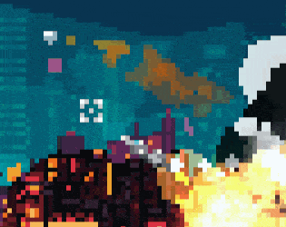

Cybergame 2077 er leikur gerður fyrir LOWREZJAM 2022. Þú spilar sem flugvél og skýtur geimverur sem hafa ráðist á jörðina.
Leikreglur
Geimskipinu er stjórnað með músinni. Vinstri smelltu til að skjóta, hægri smelltu til að fara hraðar. Skjóttu niður allar geimverurnar og reyndu að forðast skot þeirra.

Um leikin
Geimskipinu er stjórnað með músinni. Vinstri smelltu til að skjóta, hægri smelltu til að fara hraðar. Skjóttu niður allar geimverurnar og reyndu að forðast skot þeirra.
Arnar Karlsson og Emil Ingó hönnuðu cybergame 2077 á 8. ágúst 2022. Arnar sá um allan kóðann og flestar teikningar á meðan Emil sá um tónlist og hljóð. Þessi leikur var aðeins gerður á 2 dögum því hann var gerður fyrir LOWREZJAM 2022 sem er svona tölvuleika keppni og það mátti bara gera leikin í 64 x 64 pixlum. Leikurinn endaði í 79 sæti og 428 kepptu í keppninni.
Spilendur
þessi leikur var aðallega gerður fyrir þá sem kepptu í leikjakeppninni til að meta.
Framtíðarhorfur leiksins
leikurinn verður líklega aldrei uppfærður nema að mér leiðist mjög mikið eða eitthvað.
Heimildir
Ég fékk allar upplýsingarnar frá mér sjálfum.